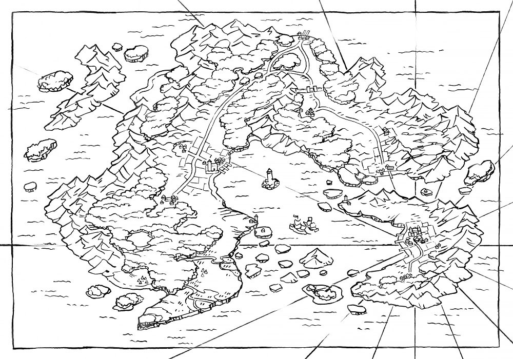

Story Time!
The World of Quest Log takes place in the country teralunda, a former war torn land that now thrives in its own peace dispite the isolation from the rest of the world.
Recently there have been roumors of attacks from monsters, thievs, and even demons on peacful villages. Based on who you chose to start as you will journy to diffrent areas of the country to find the truth behind these rumors.
Gameplay
The overall gameplay is quite simple as the game is a choose your own adventure game, mostly testing the player ability to read and use logic to make correct choices.